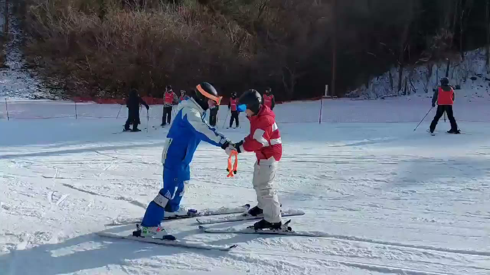
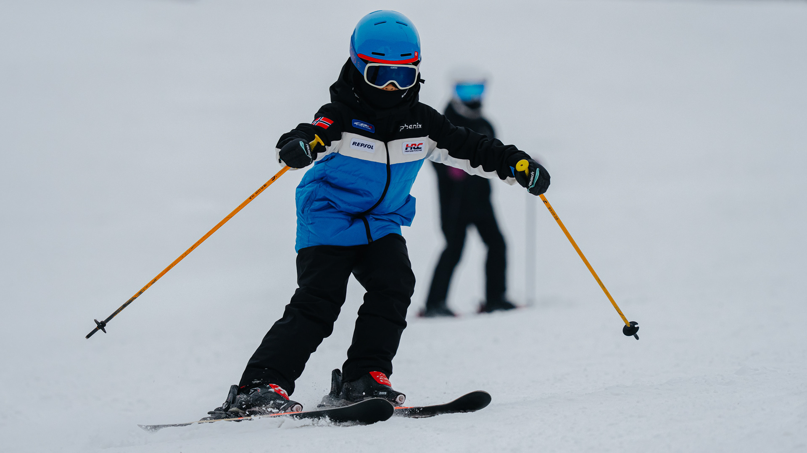

CONFIDENCE SKI ACADEMY
수업의 속도를아이의 속도에 맞게
주니어 스키 개인 레슨 · 시즌 강습


CONFIDENCE SKI / THE ACADEMY
성장의 기준은
아이에게 있습니다.
아이들이 최우선이 되는 아카데미. 한 번의 수업부터 겨울을 함께하는 시간까지, 아이를 보고 다음 걸음을 정합니다.
수업 방식 살펴보기 ↗LESSON / 개인 레슨과 시즌 강습
한 명에게
집중하는 시간.
지금 필요한 연습을 정하고, 매 회차 영상으로 돌아봅니다. 아이의 속도에 맞춰 이어지는 수업입니다.
수업 안내 자세히 보기 ↗
오늘의 움직임에서 다음 턴으로SEASON / 겨울의 경로
한 곳에서 머무는
스키가 아닌
성장하고 경험을
넓히는 스키
개장부터 3월 초까지 한 곳에서만 머물지 않고 최적의 슬로프를 찾아 떠납니다.
